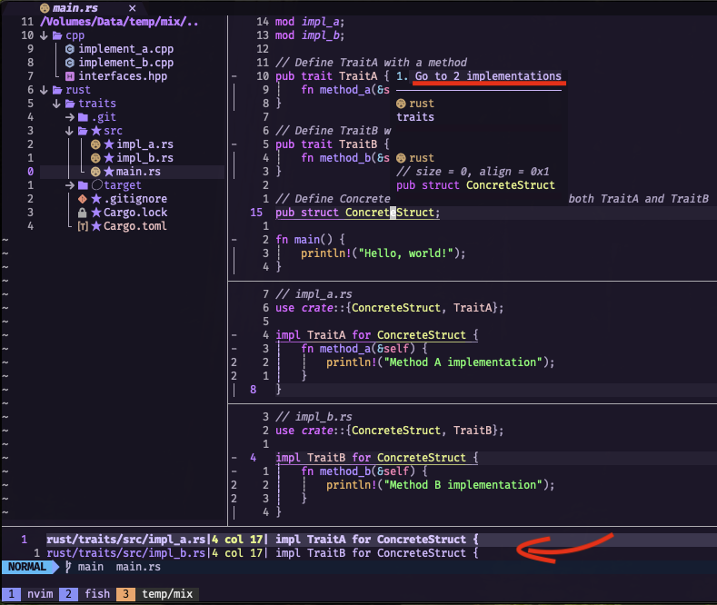
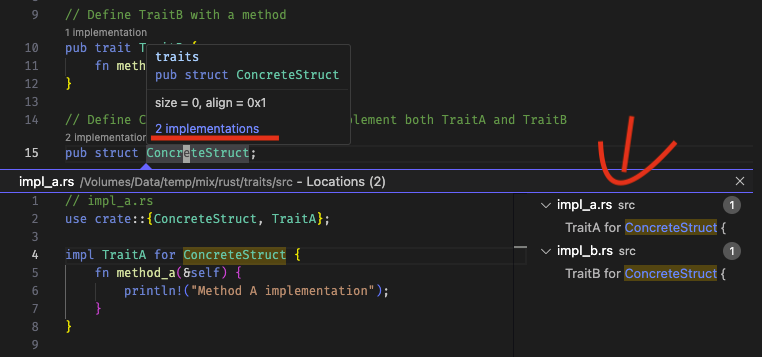

How to Check Traits Implemented for a Struct or Enum
Rust Tips: How to Check Traits Implemented for a Struct or Enum
When transitioning from OOP languages to Rust, you might notice some differences in how traits (similar to interface in Java) are handled. In OOP, a class often centralizes information about inherited interfaces, making it easy to see at a glance.
Java Example
// Interfaces.java
interface InterfaceA {
void methodA();
}
interface InterfaceB {
void methodB();
}
// ConcreteClass.java
public class ConcreteClass implements InterfaceA, InterfaceB {
@Override
public void methodA() {
// Implementation for methodA
}
@Override
public void methodB() {
// Implementation for methodB
}
}
In Rust, however, traits implemented by a struct or enum might not be as immediately obvious, since their implementations can be scattered across multiple files.
Rust Example
// interfaces.rs
pub trait InterfaceA {
fn method_a(&self);
}
pub trait InterfaceB {
fn method_b(&self);
}
// concrete_struct.rs
pub struct ConcreteStruct;
impl ConcreteStruct {
pub fn new() -> Self {
ConcreteStruct
}
}
// impl_a.rs
use crate::interfaces::InterfaceA;
use crate::concrete_struct::ConcreteStruct;
impl InterfaceA for ConcreteStruct {
fn method_a(&self) {
// Implementation for method_a
}
}
// impl_b.rs
use crate::interfaces::InterfaceB;
use crate::concrete_struct::ConcreteStruct;
impl InterfaceB for ConcreteStruct {
fn method_b(&self) {
// Implementation for method_b
}
}
Thankfully, rust-analyzer, a powerful tool for Rust developers, bridges this gap and makes exploring trait implementations seamless. In this article, we’ll explore how to leverage rust-analyzer in NeoVim and VSCode to quickly check which traits a Rust struct or enum implements.
NeoVim: Leveraging rustaceanvim [^1]
If you’re using NeoVim, here’s how you can easily inspect trait implementations:
-
Set Up rustaceanvim: Ensure you have rustaceanvim configured as your Rust development environment.
-
Navigate to the Symbol: Place your cursor over the struct or enum whose trait implementations you want to inspect.
-
Open the Symbol Inspector: Press SHIFT+K twice. This opens the symbol inspector, displaying useful information about the symbol.
-
Find Trait Implementations: Look for the line that says “Go to [x] implementations” (where x represents the number of implementations). Press Enter to open a window showing all the traits implemented by that symbol.

VSCode: Simplified with rust-analyzer
VSCode users can also take advantage of rust-analyzer for similar functionality. Here’s how:
-
Install rust-analyzer Extension: Make sure you have the rust-analyzer extension installed and enabled in your VSCode setup.
-
Navigate to the Symbol: Click or place your cursor on the struct or enum you’re interested in.
-
Open the Symbol Inspector: Press SHIFT+K once. This opens a detailed view of the symbol, including trait implementations.
-
Explore Implementations: Click on the “[x] implementations” link. A new window will appear, listing all the traits implemented by the symbol.

Why This Matters
Understanding which traits a struct or enum implements is essential for maintaining and debugging Rust code, especially in larger projects. By integrating rust-analyzer into your workflow, you can overcome Rust’s decentralized trait implementation syntax and make your development process smoother.
Whether you’re using NeoVim or VSCode, rust-analyzer empowers you to navigate and understand your codebase with confidence. Try these tips today and experience the productivity boost firsthand!
References
[^1] rustaceanvim